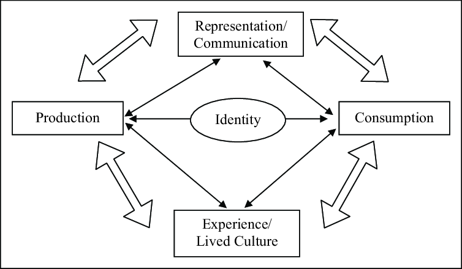

VISION
Thomas Buxo + François Girard-Meunier : web guidance
Thank you : Audronė Buckienė
Thank you : Cecilie Fang Jensen
[Fig. 1] Source: Matas Buckus
Researching what the term of “graphic design” possibly means, I found myself being able to access so much content through newly available and ever expanding digital manners. Scrolling the endless streams of images generated by algorithms, made accessible through social media, developing an addiction of “keeping up” and a fear of “missing out”. This immense saturation of curated imagery I experienced in my daily life, in the academy, at home and outside hindered my study process and overall interest the subject of “graphic design”. Being in this mindset of “everything has already been done” pushed me to take a lengthier break from certain ways of consuming visuals, particularly through digital medias.
[Fig. 1] Source: Matas Buckus
Are there possible aspects of the physical world which we overlook in our daily, busy lives? An interest in the visual aspects of the physical public space started to appear Could it possibly be that all these minimal, clear, instructive signages reflect certain aspects of our society today? What can be concluded about the state’s thirst for authority from numerous signs in public? An excessive attempt to control and regulate public life, traffic and even our train of thought?
Public signage ages and gets transformed by factors such as rain, strong winds, fluctuating temperatures, natural reactions, falling objects, animals, humans, and multiple types of vehicles that are utilized by humans. In this thesis, I will investigate “modern” capitalistic society and its cityscapes, showing that these are closely intertwined with what we are exposed to visually in the public space. By analyzing the beginnings and objectives of signage I turn to theories of perception and behavior. The categories of signs differ between commercial and informative types of signage, between the physical, tactile and newly conceived digital public space. In case studies I study the above mentioned as well as regulations, the bureaucratic and formal aspects of state and company owned signage - but also various artistic approaches.
[Fig. 2] Source: Matas Buckus
[Fig. 3] Source: Matas Buckus
[Fig. 4] Source: shorthistory.org
[Fig. 5] Source: shorthistory.org
[Fig. 6] Source: sleutelstad.nl
Wake up, get ready, eat, work, rest and repeat. We humans naturally mold ourselves into daily routines to create consistency and slowly achieve our goals. All of us have our own values, objectives and beliefs, which we embody through our way of thinking, speaking, dressing. Our homes are a safe space in which we can adapt to fit our needs and wants. However, throughout our life we visit uncountable destinations. To get to these places we commute though the so called public space. Nowadays the public space is somewhat of a visual war-zone, an abundance of un-familiar faces, advertisements and authoritative signs of the state, communicating how, what, when or why we should behave in certain manners[Fig. 1]. Instructions of where to walk, where to stand, where to stop, where not to walk, where not to stand, where not to stop. We commute through an urban forest consisting of a mixture of language and symbols, many of which can be rather cryptic to the common pedestrian[Fig. 2, 3]. Graphic design is used aggressively, to convince, directing your attention, informing your behavior, and maintaining authority.
[Fig. 2] Source: Matas Buckus
[Fig. 3] Source: Matas Buckus
Firstly, we take a step back and try to understand why finding your way around your environment is an essential part of life. In his book “Wayfinding”, Michael Bond states:
[Fig. 4] Source: shorthistory.org
With no signs or navigation technology to lead the way, humans had to find other means of understanding space. Being on foot also meant that if you got lost after sun set you would be exposed to many dangers, ultimately risking your life. Remembering your direction and path and way back home was crucial for survival.
In today’s urban landscape it is hard to pay attention to geographical differences and landmarks due to the saturation of visual material. Some of this content is designed to lead us on our way. However most of it has different purposes such as persuasion, distraction and increasing profit[Fig. 5]. Does this visual overload help us to stay focused and navigate to our intended destinations, or does it rather inflict a feeling of cognitive dissonance?
[Fig. 5] Source: dreamstime.com
Whatever we see in this process has an undeniable effect on how we feel and behave later on. Power structures which maintain our society are resembled in the visual material that we encounter. Public signage acts as a stationary manner to transmit a message, persuade, tell us what to and what not to do
This thesis serves as an investigation of the intentional and accidental, human-initiated and natural deterioration, decay and aging of public signs. The life-span of a public object is analyzed through three main stages. Firstly the design, purposes and objectives of public signs are discussed as “conception”. Why do such authoritative signs even exist and what constitutes their visual aspect? Secondly, the “birth” of signage, touching the streets: Do these signs blend in or stand out in combination in public space[Fig. 6]? Thirdly, the “youth to retirement” chapter examines the visually altered state of the sign, the content of a sign becoming irrelevant through its aging process. Covering up or even hiding information with tape, blocks or laying it flat on the ground has an immediate effect on the functionality — the sign never returns to its primal condition.
[Fig. 6] Source: sleutelstad.nl

[Fig. 7] Source: imamp.colum.edu
[Fig. 8] Source: Abdmur
[Fig. 9] Source: Andrew Clark
[Fig. 10] Source: Yukaghir girl writes love letter
[Fig. 11] Source: Alberto Castelli
[Fig. 12] Richard Lewis www.businessinsider.com
[Fig. 13] Source: “Traffic signs manual – Chapter 7” Department of transport (Northern Ireland)
[Fig. 14] Source: “Traffic signs manual – Chapter 7” Department of transport (Northern Ireland)
[Fig. 15] Source: mukulmunir.com
[Fig. 16] Source: signsanddisplays.com
[Fig. 17] Source: Matas Buckus
[Fig. 18] Source: ed.nl
[Fig. 19] Source: tsjechie.net
[Fig. 20] Source: mir-cdn.behance.net
[Fig. 21] Source: behance.net
[Fig. 22] Source: Matas Buckus
[Fig. 23] Source: Matas Buckus

[Fig. 24] Source: Matas Buckus

[Fig. 25] Source: Johan Gustavsson

[Fig. 26] Source: Teun Castelein
[Fig. 27] Source: Teun Castelein
[Fig. 28] Source: AT5
The human species tends to be driven by a desire to create and categorize meaning. The term “Homo Significans”, coined by Romanian philosopher Henri Wald, describes humans as meaning makers. We make meaning by interpreting and creating “signs”; generally speaking, a sign has no fixed medium, it can range from words, images, objects, colors to sounds, odors and flavors. According to American philosopher Charles Sanders Peirce:
[Fig. 7] Source: imamp.colum.edu
A sign is usually intended to signify a particular message, however how humans perceive and understand the language and symbols that the sign communicates through, depends largely on the context of the viewer. The theory of reception was explored by Stuart Hall in 1973, where he focuses on the encoding and decoding of content given to audiences through media such as television, magazines, radios. Hall points out that any type of media content does not have inherent meaning, and that meaning only comes from the human that observes and processes it in their mind
[Fig. 8] Source: Abdmur
A key element of signage is language. In contrast to asemic[Fig. 9] or semasiographic[Fig. 10] writing, which are not directly related to speech, the use of the alphabet we are used to form a young age on signage, strives to be universally read and understood by all civilians however also implicating colonization of western thought. In the modern Western world, time is increasingly measured against profit and achievement, a never-ending race against the clock
[Fig. 9] Source: Andrew Clark
[Fig. 10] Source: Yukaghir girl writes love letter
[Fig. 11] Source: Alberto Castelli
[Fig. 12] Richard Lewis www.businessinsider.com
Benjamin Walter highlighted that it is important to not only understand what a linguistic entity implies, but to also question what mental entity it is a direct expression of:
When it coms to how both linguistic and visual language are used and treated for direct clarity, we dive into the abundant world of typography. Firstly, what does the word typography actually imply? According to Gerrit Noordzij, an internationally acclaimed typographer and type designer
Design of signage systems involves the analysis and editing of information and testing on prototypes for legibility under various conditions. No less important than the information itself, is the typeface chosen to display that content. In many cases, typefaces are specially designed or adapted. Taking into account variables such as the distance they need to be read from, the factor of movement, illumination of the sign and particular manufacturing processes that are utilized.
Going into more details, some crucial factors of a typeface that are taken into account are counters (the white enclosed spaces within characters such as b and c), treatment of characters such as “I”, “l” and the figure “1” and the clarity of numerals. However the design of the characters themselves is only half of the job, what helps these shapes to read easily is the space between and around them[Fig. 13, 14]. Compared to type used in books, this space between characters, words and lines takes on a much more important role, since it allows for legibility from longer distances. In most signage created after the Second World War, the style of typeface used is sans serif[Fig. 15]. The fact that serif typefaces “knit” character and words together does not benefit the essential readability factor of signage. When it comes to the use of symbols and pictograms, a belief in an “international language” also seems to exist[Fig. 16]. However recent research suggests that pictograms are most effective when they represent an actual thing, and the depiction of a concept or idea can become problematic due to the presence of ambiguity when direct visual equivalence is lost
[Fig. 13] Source: “Traffic signs manual – Chapter 7” Department of transport (Northern Ireland)
[Fig. 14] Source: “Traffic signs manual – Chapter 7” Department of transport (Northern Ireland)
[Fig. 15] Source: mukulmunir.com
[Fig. 16] Source: signsanddisplays.com
[Fig. 17] Source: Matas Buckus
Thinking about the different ways public signage can be perceived, we take a look at Oscar Kocken’s collection of diversion signs
[Fig. 18] Source: ed.nl
A variety of studies related to behavioral analysis have proven the effectiveness of signs towards multiple goals. Firstly in the road-traffic sector, promoting seat belt use
[Fig. 19] Source: tsjechie.net
[Fig. 20] Source: mir-cdn.behance.net
[Fig. 21] Source: behance.net
[Fig. 22] Source: Matas Buckus
[Fig. 23] Source: Matas Buckus
Signs tend to be direct, avoiding any confusion or misunderstanding. However recently, the use of more complex visual stimuli in order to facilitate certain reactions from citizens, has been experimented with. An example of this is the use of signs depicting eyes, with a goal to create a feeling of “someone watching you”[Fig. 24, 25]. This trial in the Hague examines if this feeling of being watched can promote recycling and prevent people from mindlessly littering
[Fig. 24] Source: Matas Buckus
[Fig. 25] Source: Johan Gustavsson
What happens when street signage is stripped of its informative content, and used in a purely aesthetic manner? Artist Teun Castelein has collaborated with sign company Trafficsupply to express his views on the attention economy behind public signage[Fig. 26, 27, 28]. These signs are materialized int he same way that official ones are, however playing with the viewers perception by displaying only various forms and colors. Citizens are left to ponder the meaning and purpose of the signs. While the original possibility of even putting up these signs in the streets remains unknown, dutch municipalities say that
[Fig. 26] Source: Teun Castelein
[Fig. 27] Source: Teun Castelein
[Fig. 28] Source: AT5
[Fig. 29] Source: rollsroller.se
[Fig. 30] Source: Baines, Phil, and Catherine Dixon.
[Fig. 31] Source: stock.adobe.com

[Fig. 32] Source: Dapper
[Fig. 33] Source: Matas Buckus
[Fig. 34] Source: Matas Buckus
[Fig. 35] Source: depositphotos.com
[Fig. 36] Source: pinterest.com
[Fig. 37] Source: Matas Buckus
[Fig. 38] Source: tripadvisor.co.uk
[Fig. 39] Source: publicdomainpictures.net

[Fig. 40] Source: researchgate.net
[Fig. 41] Source: ewg.org

[Fig. 42] Source: flyboost.com
[Fig. 43] Source: amazon.com
[Fig. 29] Source: rollsroller.se
Taking a step back, we can observe that before the industrial revolution, which introduced cast iron and the use of patterns and moulds, public signage (informative and commercial) used to be produced by hand. Carving was the earliest durable method of applying lettering and was used on milestones from Roman times onwards
[Fig. 30] Source: Baines, Phil, and Catherine Dixon.
[Fig. 31] Source: stock.adobe.com
Is this craft of hand crafting signs still present in todays fiercely mechanized and automated society? While strolling around markets I could not ignore a certain style of sign communicating prices and names of items that are being sold. A very specific hand style, emphasized strokes, visualized using vibrant colors and illustrations. Henri the sign painter is the so called “Der Marktmaler van Amsterdam”
[Fig. 32] Source: Dapper
[Fig. 33] Source: Matas Buckus
[Fig. 34] Source: Matas Buckus
In order to understand the reason for the presence of different types of signage (informative and commercial) in the public space, we must look at the notion of urbanization as a whole, a growing phenomenon in our globalized world and how it is connected with economics. Looking back, there have been flows of products, capital, labor, raw material and tourists for a long time, however these usually took place within an “inter-state” system, meaning that the transactions were closely monitored and regulated by the national states
[Fig. 35] Source: depositphotos.com
This leads us to the topic of human rights, about which David Harvey wrote in 2008:
In 1969, urban sociologist Robert Park wrote:
Laws and regulations relating to public signage are ever changing, to understand why we are exposed to certain visual content in the urban landscape requires an examination of said regulations and parts of the history of capitalism. In his presentation about recent cases and trends surrounding billboard and sign regulation in the United States, Christopher L. Nichols states:
The explosion of road vehicles, namely automobiles, allowed humans to explore landscapes almost endlessly. With this, came a great opportunity to utilize spaces which were not easily reachable by foot before, an open door to creep into the minds of humans through positioning of visual content throughout roads
[Fig. 36] Source: pinterest.com
[Fig. 37] Source: Matas Buckus
[Fig. 38] Source: tripadvisor.co.uk
Globalization and mobility resulted in small retailers loosing large parts of their local customer bases, which led to an increased distance between them and their customers, but an increased familiarity with larger companies, traces of their existence bing scattered around the urban space. Due to this, the amount of small retailers in the span of a customer increased drastically, at the same time shaping a competitive atmosphere. In recent years, the notion of attention has become a significant topic of discussion in relation to “the new economy” and the “digital economy”
[Fig. 39] Source: publicdomainpictures.net
[Fig. 40] Source: researchgate.net
Over the past years, various information technologies paved the way for many digital applications which supposedly make our lives more faster and more convenient. There is a new aspect of a digital public space which is not solely used to benefit humans, but also used as ways to spread propaganda, advertising and various messages which often have the goal of maximizing profit for their parent companies. How do we differentiate between these two public spaces and do their impacts vary due to their different mediums of existence?
Looking into the newly conceived public space that is available today; the digital space, we can clearly see why it is such an attractive mode of communication for corporations and governments.
[Fig. 41] Source: ewg.org
[Fig. 42] Source: flyboost.com
Another technological service, which has reached the hands of consumers over the last decade, is the so called “Global Positioning System” (GPS). First appearing on specific devices made specially for this service, later becoming incorporated into the common and widely universal smart phone[Fig. 43]. Today, navigating to a destination you have not been to, is as easy as asking your phone for directions, and this is a huge technological advance, since it enables us to stop solely relying only on road signs and printed maps
[Fig. 43] Source: amazon.com
[Fig. 44] Source: Matas Buckus
[Fig. 45] Source: Matas Buckus
[Fig. 46] Source: Matas Buckus
[Fig. 47] Source: Ruben Pater
[Fig. 48] Source: wikipedia.org
[Fig. 49] Source: Matas Buckus
[Fig. 50] Source: Matas Buckus
[Fig. 51] Source: Matas Buckus
[Fig. 52] Source: juristenkantoor.nl

[Fig. 53] Source: AD.nl
[Fig. 54] Source: 99percentinvisible.org
[Fig. 55] Source: 99percentinvisible.org
[Fig. 56] Source: 99percentinvisible.org
[Fig. 57] Source: Matas Buckus
[Fig. 58] Source: Matas Buckus

[Fig. 59] Source: Matas Buckus

[Fig. 60] Source: Matas Buckus

[Fig. 61] Source: Matas Buckus
[Fig. 62] Source: dreamideamachine.com
[Fig. 63] Source: dreamideamachine.com
Among the various types of public sign damage, vandalism[Fig. 44] is solely caused by humans, a conscious decision to obstruct communication of the state. Vandalism of signage is a concern because it can negatively affects road safety, driving behaviors, and increase costs for transportation agencies to replace, repair, or maintain the given signage
[Fig. 44] Source: Matas Buckus
What happens if what a sign is signifying gets questioned? This can go two ways, firstly, if the sign is informative according to some form of conduct, the content will be closely monitored by workers of the state, being replaced or covered up in various manners in case of expiry[Fig. 45, 46]. Secondly, in the case of a citizen, it is the breaking out of the imposed thinking process, seeing the sign as a canvas for expression. Could it be looked at in a way that the civilian also has the power to “censor” the state, reversing the phenomenon, even be it only for a day, or until the sign gets repaired[Fig. 47]? Could some conscious human reactions on the sign be an expression for dissatisfaction that does not necessarily have to do with the content of the sign? Perhaps a reaction to the visual bombardment we are forced to endure in our daily lives? In “The Society of the Spectacle” Guy Debord states:
[Fig. 45] Source: Matas Buckus
[Fig. 46] Source: Matas Buckus
[Fig. 47] Source: Ruben Pater
Vandalism, especially graffiti, has an ever present role in society as a tool to examine the past through the voice of the unheard
[Fig. 48] Source: wikipedia.org
We mentioned Détournement of the urban space as a protest against standards of society, but is it possible that similar approaches exist in todays world? On Sunday the 13th of February 2022, a protest march consisting of thousands of people occurred in The Hague. The protest was against the corona restrictions of the past two years, to which many individuals have a strong oppositions. The march was led throughout the city, however it was apparently not enough for the individuals involved to only make noise and attract attention with hand made signage. The public signs that the protesters encountered along their march were bombarded with stickers expressing this dissatisfaction with the states decisions to an extent that the initial content of the signs was almost completely covered up[Fig 49, 50, 51]. This use of signage as paste boards can be seen a dangerous, since the absence of certain road signals may cause accidents between vehicles and pedestrians. However, looking at this semi-extreme incident from a Situationist perspective, it demonstrates very clearly the dissatisfaction of a certain portion of the population and almost certainly attracts the attention of the state and other civilians alike.
[Fig. 49] Source: Matas Buckus
[Fig. 50] Source: Matas Buckus
[Fig. 51] Source: Matas Buckus
According to HR group, an organization which registers all traffic signs in the Netherlands, 20 percent of all traffic signs are superfluous and should be removed. The group found that 600,000 of the three million traffic signs in the Netherlands are either unnecessary or unclear[Fig. 52]. A spokesperson of the group stated that:
[Fig. 52] Source: juristenkantoor.nl
This distractive nature of the mobile phone leads us once again to the digital public space.
A factor that contributes to the jungle of signs in the urban space is the necessity for new signage, addressing issues that are gradually noticed and deemed relevant over time. Allowing the government to have closer control of behavior in the public space, signs about prohibition are commonly found in urban spaces, however signage is also used frequently as an attempt to prevent accidents. In the Hague, a sign which warns cyclists about tram rails started appearing this year
[Fig. 53] Source: AD.nl
Following our findings about the information overload in urban areas, a question arises: are any governments taking action to counter the over-saturation of visual matter in the public space? Around 2006 in San Paulo, Brazil, a city where public advertisement prevailed and got out of hand amount wise, mayor Gilbert Kassab decided to submit a bill to the city council which sought to eliminate absolutely all outdoor advertising. Kassab saw advertising as “visual pollution” and stated
[Fig. 54] Source: 99percentinvisible.org
[Fig. 55] Source: 99percentinvisible.org
[Fig. 56] Source: 99percentinvisible.org
Despite these drawbacks, in the long run San Paulo experienced beneficial outcomes of the advertisement ban. The removal of slogans and logos revealed the cities architectural aspect—a rich urban feature that was hidden before. Vinicius Galvao, a reporter working for one of Brazil’s largest newspapers notes:
The excessive communication via the physical and digital space not only negatively effects humans, but also leaves a significant mark on the environment. Looking specifically at commercial signage, erecting billboards causes direct ecological damage due to thousands of trees being cut down or poisoned to improve visibility of billboards
Materialized signage placed in the urban space is susceptible to visual alteration not only by human, but also by environmental intervention [Fig. 57, 58, 59, 60]. Could it be that this deterioration is the voice of nature, reminding us that we are not the ones in control and that anything exposed to the environment inevitably ages? This mind-set has been embodied by the Japanese world-view “Wabi-sabi” and implemented in various art and design practices, described by Joathan Flowers:
[Fig. 57] Source: Matas Buckus
[Fig. 58] Source: Matas Buckus
[Fig. 59] Source: Matas Buckus
[Fig. 60] Source: Matas Buckus
Recently, we can observe that this world-view, perhaps fragmented or re-interpreted, is also present in the Western art sphere. Dutch artist Magali Reus sculpturally interprets modern interiors and public spaces, interested in the visual language of objects that surround us, she makes use of formal qualities which carry specific associations, “a kind of meandering emotional projection”
[Fig. 61] Source: Matas Buckus
[Fig. 62] Source: dreamideamachine.com
[Fig. 63] Source: dreamideamachine.com
Throughout this thesis, we sought to understand some of the stages of life, objectives and implications of public signage. Firstly, we noticed that the notion way-finding has been around even before recorded history, even if it was present in other forms than signage, it was a crucial aspect of survival. Due to the complexities of todays urban societies, designers and crafts-men face the challenge of conceiving and producing signs for a wide audience which require instant visual transfer of information, and could withstand the harsh conditions of the urban realm. We discovered that one might experience various cognitive reactions to the content of signage, due to its ambiguous nature. Briefly going over the typographical aspects of signage, we detected some important design decisions that are common when direct and practical communication is desired. In addition to the functional and informational aspect of signage, the design and placement of it can very well be a political act. The type of information that signs carry reflect the ideologies of governments and organizations. Regarding signage design, we can conclude that an “international” visual language becomes tricky because of the many varying cultural connotations and ways of perception. We learned that even the use of pictograms, which is one of the widely understandable form of communication, also has its limits.
Early forms of public signage used lettering that was either hand drawn or carved, relying on the skill of particular makers and workshops. Even though these makers had a conformity of spirit, they showed variation in their detailing. Todays signage is mainly produced by workers who understand machines and printing techniques but not necessarily letterforms themselves, which is the job of the graphic designer. Designers working in this specific field are increasingly aware of both the functional aspect and how the design might reflect the identity of a certain organization. We have identified that even in this age of mechanization and automation, the notion of the all-in-one sign craftsman has not completely disappeared, individuals and businesses still reach out to them for their specific and visually powerful hand-style and compositional skills. Through case studies, we looked at the various interpretative possibilities in terms of unique public signage or artistic expression utilizing its visual language.
By observing todays condition of the public space, we noted that we cannot ignore the notion of the digital public space, because of its excessive presence in our daily lives. By comparing the two, we found that the digital public space might exhausting our cognitive capacities eve more than the physical space, since it is accessible from nearly anywhere at any given time. Exposing that perhaps informatory and regulatory signage dominates our field of view less than advertising, we traced back how commercial content started to appear in the public space. This revealed the economic ties of the visual matter we regularly encounter on our commutes. We found that in places around the world, significant actions are being taken to minimize this capitalist visual bombardment in order to resurrect unique values and visual aspect of a city.
Lastly, we circled the various reasons for human intervention of public signage and that what is seen as vandalism from the state’s point of view, might be pure self expression, a tiredness of the constant “performance” of life, an extremism which is necessary if a certain change is to come about. Regarding the recently conceived digital public signage, we found out that it might not be as eco-friendly as we think, and that printed matter leaves less of an ecological footprint due to the absence of constant energy consumption. Discovering that the presence of signage in the public space has a significant impact on the health of planet earth, we found ways to sense the voice of the environment talking back to us through visual degradation and decay. Perhaps it is up to us to recognize and understand the beauty of visual outcomes resulting from the co-existence of man-made and natural phenomenons.
[8] Aarsleff, Hans. From Locke to Saussure: Essays on the Study of Language and Intellectual History. University of Minnesota Press, 1983.
[11, 12] Alberto, Castelli. “On Western and Chinese Conception of Time: A Comparative Study.” Philosophical Papers and Review, vol. 6, no. 4, 30 Sept. 2015.
[36] Arrighi, Giovanni. The Long Twentieth Century: Money, Power, and the Origins of Our Times. Verso, 2010.
[28] AT5/NH Amsterdam. “Het Spiegeleibord Is Geen Verkeersbord: Het Is Kunst.” Www.at5.Nl, 6 Oct. 2021.
[44] Badel, F. & Lopez Baeza, J. Digital public space for a digital society: a review of public spaces in the digital age. ArtGRID-Journal of Architecture, Engineering & Fine Arts, 2021.
[15,16,31] Baines, Phil, and Catherine Dixon. Signs : Lettering in the Environment. London, Laurence King Pub, 2008.
[58] van Beelen, Joke. “Veel Overbodige Verkeersborden in Nederland? | B&O Letselschade.” Www.juristenkantoor.nl, 25 Feb. 2019.
[13] Benjamin, Walter, and Peter Demetz. Reflections : Essays, Aphorisms, Autobiographical Writing. New York, Schocken Books, 1986.
[1-2] Bond, Michael. Wayfinding How We Find - and Lose - Our Way. Picador, 2020.
[65] Brunner, Laurel. “Environmental Impact of Digital Signs and Displays | Verdigris.” Verdigrisproject.com, 16 Sept. 2019.
[22] Burt, Christopher D.B., et al. “Prompting Correct Lifting Posture Using Signs.” Applied Ergonomics, vol. 30, no. 4, 1999.
[23] Ferrari, Joseph R., and Lynda M. Chan. “Interventions to Reduce High-Volume Portable Headsets: ‘Turn down the Sound!’” Journal of Applied Behavior Analysis, vol. 24, no. 4, 1991.
[66] Flowers, Johnathan. “Wabi Sabi: The Aesthetic of Decay”.
[53] “Graffiti: Plain Vandalism Or Self-expression Through Art.” GradesFixer, 16 Dec. 2021.
[32] Giedion, Siegfried. Mechanization Takes Command. O.U.P., 1948.
[45] Gummelt, Dominique. “Proof That the Human Body Was Made to Move.” Www.acefitness.org, 4 Feb. 2015.
[9] Hall, Stuart. Encoding and Decoding in the Television Discourse. Univ. of Birmingham, 1973.
[52] Harris, John. “Guy Debord Predicted Our Distracted Society | John Harris.” The Guardian, The Guardian, 30 Mar. 2012.
[37,39] Harvey, David. “‘The Right to the City.’” The City Reader, 2020.
[27] Helsloot Marijke “Een Gezicht Met Loerende Ogen: Dit Is Waarom Dit Bord Is Neergezet Bij Het Milieueiland.” Indebuurt Zoetermeer, 15 Feb. 2021.
[34] “Henry Sign Painter.” www.henrysignpainter.nl/2020/02/18/der-marktmaler-van-amsterdam/.
[17] Hoekstra, Diede. “DPG Media Privacy Gate.” Myprivacy.dpgmedia.nl, 7 Feb. 2022.
[20] Huybers, Sherry, et al. “Reducing Conflicts between Motor Vehicles and Pedestrians: The Separate and Combined Effects of Pavement Markings and a Sign Prompt.” Journal of Applied Behavior Analysis, vol. 37, no. 4, 2004.
[64] Jordaan, Frans. “ENVIRONMENTAL IMPACT OF OUTDOOR ADVERTISING.” (2001).
[50] Khalilikhah, Majid, et al. “Traffic Sign Vandalism and Demographics of Local Population: A Case Study in Utah.” Journal of Traffic and Transportation Engineering (English Edition), vol. 3, no. 3, 2016.
[55, 56] Knabb, Ken. Situationist International Anthology. Berkeley, Bureau Of Public Secrets, 2007.
[62] Kohlstedt, Kurt. “Clean City Law: Secrets of São Paulo Uncovered by Outdoor Advertising Ban - 99% Invisible.” 99% Invisible, 2 May 2016.
[60] Kraaijeveld, Maaike. “Verkeersbord met vliegende fietsers op zoutmanstraat” ad.nl, 13 Mar. 2019.
[4] Kuitenbrouwer, Carel, et al. Het Straatbeeld Van Dublin, Amsterdam & Berlin = the Streetscene of Dublin, Amsterdam & Berlin = Das Straßenbild Von Dublin, Amsterdam & Berlin. Lecturis, 2000.
[25] Kurz, Tim, et al. “Utilizing a Social-Ecological Framework to Promote Water and Energy Conservation: A Field experiment1.” Journal of Applied Social Psychology, vol. 35, no. 6, 2005.
[38] Lang, Gladys Engel, and Ralph H. Turner. “Robert E. Park on Social Control and Collective Behavior.” American Sociological Review, vol. 34, no. 5, 1969.
[3] Lefebvre, Henri, and Donald Nicholson-Smith. The Production of Space. Blackwell, 2000.
[41,42] Loshin, Jacob. “Property in the Horizon: The Theory and Practice of Sign and Billboard Regulation.” SSRN Electronic Journal, 2006.
[51] Lyotard, Jean-François. The Inhuman: Reflections on Time. Polity Press, 1998.
[21] Mayer, Joni A., et al. “Promoting Sun Safety among Zoo Visitors.” Preventive Medicine, vol. 33, no. 3, 2001.
[5] Meis, Julia, and Yoshihisa Kashima. “Signage as a Tool for Behavioral Change: Direct and Indirect Routes to Understanding the Meaning of a Sign.” PloS One, Public Library of Science, 30 Aug. 2017.
[67] Michalarou, Efi. “ART-PRESENTATION: Magali Reus-Private Road – Dreamideamachine ART VIEW.” Dreamideamachine.
[35] Michel, Boris. “Saskia Sassen: The Global City.” Schlüsselwerke Der Stadtforschung, 2016.
[63] New Dream. “NewDream.” New Dream, 28 Feb. 2018, newdream.org/blog/sao-paolo-ad-ban.
[40] Nichols, Christopher. Billboard and Sign Regulation: Recent Cases and Trends. 2011.
[26] Pater, Ruben. Caps Lock: How Capitalism Took Hold of Graphic Design, and How to Escape from It. Valiz, 2021.
[6-7] Peirce, Charles Sanders (1931-58): Collected Writings (8 Vols.). (Ed. Charles Hartshorne, Paul Weiss & Arthur W Burks). Cambridge, MA: Harvard University Press
[19] Pesti, Geza, and Patrick T. McCoy. “Long-Term Effectiveness of Speed Monitoring Displays in Work Zones on Rural Interstate Highways.” Transportation Research Record: Journal of the Transportation Research Board, vol. 1754, no. 1, 2001.
[61] Plummer, Robert. “Brazil’s Ad Men Face Billboard Ban.” News.bbc.co.uk, 19 Sept. 2006.
[59] Renjith, R. “(PDF) the Effect of Information Overload in Digital Media News Content.”, 2017.
[47] Ross, Sophie. “How GPS Has Revolutionized Our Lives - Geospatial World.” Geospatial World, 11 Sept. 2018.
[46] Sennett, Richard. The Fall of the Public Man. Penguin, 2002.
[10] Shally, Anneka. “Blog - the Chinese Perspective on Time.” Chineasy, 9 Nov. 2017.
[54] “Situationist International Movement Overview.” The Art Story, www.theartstory.org/movement/situationist-international/.
[43] Terranova, Tiziana. “Attention, Economy and the Brain.” Culture Machine 13, 2012.
[68] The approach. “Magali Reus | the Approach.” The Approach, theapproach.co.uk/viewing-rooms/magali-reus/further-information/.
[48, 49] Turner, Julia. “A World without Signs.” Slate, 11 Mar. 2010.
[14] TypeRoom. “In Memoriam: Gerrit Noordzij (1931-2022) - TypeRoom.” Www.typeroom.eu, 28 Mar. 2022.
[24] Werner, Carol M., et al. “Signs That Encourage Internalized Recycling: Clinical Validation, Weak Messages and ‘Creative Elaboration.’” Journal of Environmental Psychology, vol. 29, no. 2, 2009.
[18] Williams, Melvin, et al. “Promoting Safety Belt Use with Traffic Signs and Prompters.” Journal of Applied Behavior Analysis, vol. 22, no. 1, 1989.
[29,30] Worboys, W. J. Traffic Signs: Report of the Committee on Traffic Signs for All-Purpose Roads. HMSO, 1963.
[57] “20-Per-Cent-of-The-Traffic-Signs-In-The-Netherlands-Are-Redundant.” Www.intertraffic.com, 4 Dec. 2018.